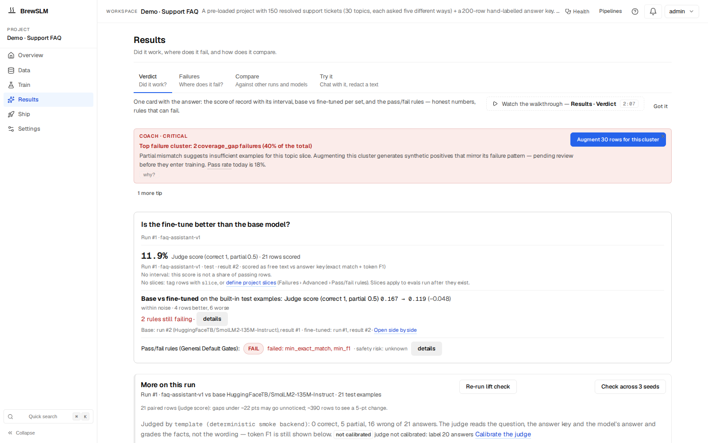

The lift check: is the fine-tune better than its base?
After every real training run BrewSLM scores the base model and the fine-tune on the same held-out rows and says better, worse, within noise or too few rows. These are the exact rules.
A single score on a fine-tuned model tells you very little. 0.62 could be a big gain over the base model or a loss, and on 40 test rows the gap you see could be luck. So the question BrewSLM answers by default is narrower: on these rows, scored the same way, is the fine-tune better than the model it started from, and is the difference bigger than row-to-row noise? This page is the rulebook for that answer.
It runs by itself after training
When a real training run completes, the watcher starts a post_training_lift_eval job (backend/app/services/post_training_eval_service.py). It scores the base model on the held-out test split, then the fine-tuned weights on the same split with the same settings, and pairs the rows. Defaults: up to 100 rows, 256 new tokens, greedy decoding (backend/app/config.py:228-236). A project can raise the row cap, or set it to all.
It skips, and says which reason applied: the switch is off globally (AUTO_LIFT_EVAL_ENABLED=false) or for the project, the run is a baseline, it didn't complete, it is one child of a seed group (the group is checked together), it was simulated, or its output folder has no weights. The global switch wins: a project can't turn the check back on if the server turned it off. The project switch is under Results → Verdict → How it's scored → Change how it's scored → "Automatic base-vs-fine-tuned check".
The base model's result is cached and reused while the test file's content is unchanged and the judge, decoding and scoring settings all match. Re-stamp the file's metadata without changing the rows and the cache holds. Change one row and the base is scored again.
Making the bar fair to the base model
Both sides are decoded neutrally: one beam, repetition penalty 1.0, no n-gram blocking, temperature 0. Before we pinned this, evals filled in whatever the model's own generation_config.json said, and one instruct family ships a repetition penalty of 1.1. On our NTSB extractor that setting alone turned 232 of 468 stated aircraft models into nulls; at 1.0 it was 16. Every result now records the decoding it used.
The base model can still do better with its maker's settings, and we don't want to beat a handicapped baseline. So when the base model's own config sets one of those knobs, the base is scored twice, neutral and with its own config, and the higher score is the bar. The fine-tune is always scored neutrally. The Verdict card says when this happened.
The verdict rule
The rows are paired by key and each pair gives a per-row change, fine-tuned minus base. The rule lives in backend/app/services/paired_comparison_stats.py:
- Too few rows under 5 paired rows. No interval is computed.
- Otherwise a paired Student-t 95% interval on the mean change: mean ± t(n−1) × s / √n.
- Better when the interval's lower end is above zero; worse when the upper end is below zero; otherwise within noise.
- When every score is 0 or 1 (exact match, pass/fail checks), there is a second condition: an exact two-sided McNemar test on the rows that changed must give p < 0.05. The smallest result that passes is 6 better and 0 worse (p = 0.031). Four better and none worse on 50 rows gives p = 0.125 and stays within noise, whatever the interval says.
- Judge scores with partial credit (1 / 0.5 / 0), F1 and rubric means are continuous, so only the interval applies.
We added the McNemar guard after watching the t-interval call tiny 0/1 wins "better". The free Is the lift real? calculator runs the same arithmetic on counts you type in.
What the Verdict card shows

For each set the card shows the score of record (picked by metric name in a fixed order, never by which number looks best), the rows scored, and a Wilson 95% interval when the score is a share of passing rows. Below that is the base-vs-fine-tuned line with the counts of rows better, worse and unchanged. If the two sides scored different row counts or token limits, it says "Not like for like" instead of comparing. And a gain carries a reminder that it is one training run.
Real examples from our own runs, with the run ids that match the blog posts:
| Run | Base | Fine-tuned | Rows | Verdict |
|---|---|---|---|---|
| IRS Pub 17 Q&A, run #148 (judged) | 0.20 | 0.02 | 41 | Worse: 9 worse, 2 better, interval −0.30 to −0.04 |
| Same run, token F1 | 0.13 | 0.27 | 41 | Better, on a metric that rewarded sounding right |
| Pub 17 passage reader, run #162 (judged, with passages) | 0.570 | 0.688 | 157 | Better: 32 better, 12 worse, +0.054 to +0.182 |
| Tool-call model, run #221 (strict pass; base with an instruction prompt, fine-tune with the bare one) | 455 / 600 | 543 / 600 | 600 | Better: 111 better, 23 worse, exact McNemar p = 5e-15 |
The first two rows are the same run. That is why the judged score is the score of record for long answers, and why we never read F1 alone on free text. The last row passed this check and still failed one of its own pre-registered bars: 7 of 100 "no tool needed" rows got a tool call anyway, against a limit of 5. The lift check answers one question, not all of them.
Seeds: is it a lucky draw?
One training run is one draw. On the Support FAQ sample the same comparison across three seeds gave +22%, +4% and −3%. The Check across 3 seeds button on the summary card re-trains the run's exact config with three seeds and scores each against the same base value. The seed verdict uses the same t-interval on the seed scores minus the base, with n = seeds and no McNemar step (at least 2 seeds; with 3 the critical value is 4.303, so the seeds have to agree). When they do, the title reads "across 3 seeds"; when they don't, it says the seeds disagree. Seed evidence outranks row evidence in the title.
Eval sets and prompt-format variants
The built-in test split is what the automatic check and the "latest eval" readers use. You can also upload named eval sets under Results → Verdict → Test sets. Versions are immutable, eval sets can never become training data, and rows that match training data are rejected on import (exact match, then word-set overlap of 0.9 or more) unless you keep them on purpose.
A set can have prompt-format variants: strip the system message, replace it, or add one where it is missing. You name them; "native" and "instructed" are just the names we use. With two variants, the Score form defaults to Every prompt format, and on a first eval of the set also to Both, base vs fine-tuned, so one Run queues four evals. On the tool-call model that showed why format matters: the base model scored 0 of 600 with the bare prompt (it answered in prose every time) and 455 with the instructed one. Comparing the fine-tune against the base's 0 would have been a meaningless win, so the bar we used was the base at its best.
Where to look
- Results → Verdict: the card, the lift line, Check across 3 seeds.
- Results → Compare: any two runs side by side, with the same paired rule.
- The bell in the top bar: the lift job's progress and its one-line verdict when it ends.